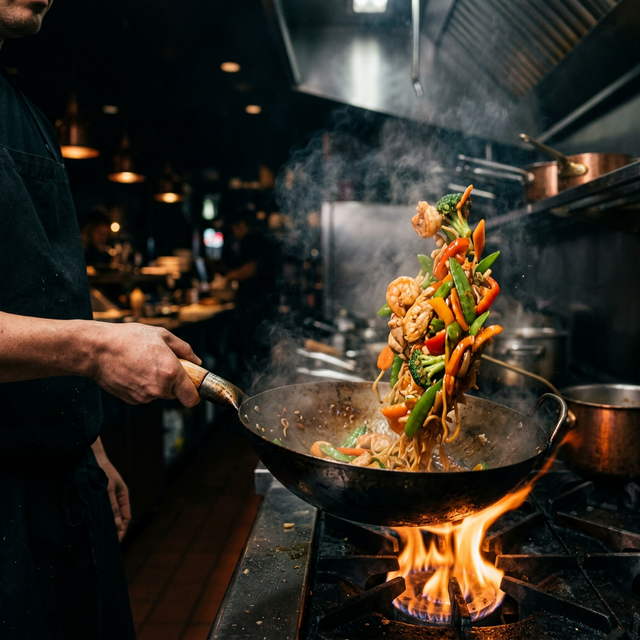

Erlebe den wahren Geschmack Thailands und Chinas mitten in Kiel. Ohne künstliche Geschmacksverstärker, immer frisch zubereitet.
Willkommen im Asia Wok Kiel. Wir bieten Ihnen ein authentisches, asiatisches Ess-Erlebnis in einer modernen und gemütlichen Atmosphäre.
Unsere Leidenschaft ist es, traditionelle Rezepte mit modernen Einflüssen zu kombinieren. Dabei legen wir höchsten Wert auf Qualität: Unsere Gerichte werden mit Liebe, besten Zutaten und ganz ohne zusätzliche Geschmacksverstärker zubereitet. Wegen Corona bieten wir aktuell nur unseren schnellen Außerhaus- und Lieferservice an.
Frisches Gemüse, hochwertiges Fleisch und originale Gewürze für den besten Geschmack.
Heiß und lecker direkt vor deine Haustür.
0431 - 990 75 54
Rufen Sie uns an für Abholung oder Lieferung.
Mo. - Fr.: 11:00 - 22:00 Uhr
Sa., So. & Feiertage: 12:00 - 22:00 Uhr
Lieferung ab 11:30 Uhr (Mo-Fr) bzw. 12:00 Uhr (Wochenende). Lieferung im Umkreis Kiel, kontaktieren Sie uns für Details.